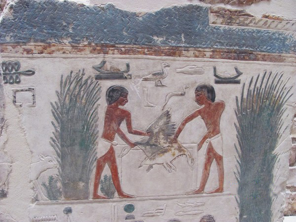

< Повернутися на головну
Історія
На календарі 1 січня. В цей день, як відомо, починається Новий рік. В усі часи і у всіх народів прихід Нового року вважалося святом, але не завжди цей день припадав на 1 січня.
В Давньому Єгипті, наприклад, Новий рік святкували на початку літа, під час затоплення Нілу.
В Давній Греції початок року випадав на найдовший день в році - 22 червня. А літочислення греки вели від відомих Олімпійських ігор, які влаштовували на честь легендарного Геракла.

Вперше календар, в якому рік починався 1 січня ввів римський імператор Юлій Цезар.
В середньовіччі в Англій Новий рік зустрічали з прихлодом весни - 1 березня.
У Франції, в часи Великої Французької революції, Новий рік святкували 22 вересня - в день утровення Республіки
Звичай дарувати новорічні подарунки прийшов до нас з Давнього Риму. Кажуть, шо першими подарунками були гілочки лавра, які символізували щастя та удачу в прийдешньому році.